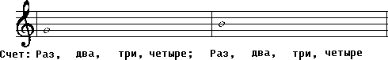

Уважаемые посетители сайта! Меня зовут Денис Шканов, и я создатель данного портала. Как мне кажется, я создал лучшее обучение игре на гитаре для новичков и начинающих, где каждый может научиться играть на гитаре с нуля.
Вероятно, я когда-нибудь открою свою инновационную школу игры на гитаре, но пока я просто студент. Тем не менее, у меня есть свой собственный курс игры на гитаре (бесплатный) и платный курс как научиться подбирать мелодии на слух.
Чтобы научиться играть на гитаре, необязательно идти в музыкальную школу. Как я уже сказал, я считаю свой сайт лучшим обучением игре на гитаре.
Вы найдете здесь все, что нужно для того, чтобы научиться играть. Начните с уроков игры на гитаре или моего самоучителя.
На этом уроке речь пойдёт о теории музыки, без которой дальнейшее обучение игре на гитаре не имеет перспективы роста. Теория является одним из важнейших этапов обучения, так как практика исполнительства на гитаре неразрывно связана с теорией и только благодаря знанию теории появляется конкретность в обучении и возможность объяснить многие технические моменты исполнения на гитаре. Есть и немало гитаристов достигших больших вершин в исполнительстве на гитаре и при этом не знакомых с теорией музыки, но обычно это династии гитаристов играющих фламенко и обучавшиеся прямым показом у своих дедов, отцов или братьев. Им свойственна определённая манера импровизационного исполнения ограниченного стилем. Чтобы достичь исполнительских успехов в нашем случае ключом к открытию секретов может быть только теория. На этом уроке я постараюсь доступно объяснить тот уровень теории, который просто не обходим для данного этапа обучения. Речь пойдёт о длительностях нот и об испанском приёме звукоизвлечения на гитаре апояндо благодаря которому достигается объёмное звучание инструмента.
Как каждый час поделён на шестьдесят минут, а каждая минута на шестьдесят секунд так и каждая нота в музыке имеет строго свою определённую длительность спасающую музыку от ритмического хаоса. Обратите своё внимание на рисунок напоминающий пирамиду. На вершине расположена целая нота длительность, которой является самой долгой по отношению к нотам расположенным ниже.
Под целой нотой своё место заняли половинные ноты каждая из этих нот ровно в два раза короче по длительности целой. Каждая половинная нота имеет штиль (палочку) который и служит её отличием в написании от целой ноты. Ниже двух половинных нот своё место занимают четыре четвертные. Четвертная нота (или четверть) по своей длительности в два раза короче половинной и её отличает в записи от половинной ноты то, что четвертная нота полностью закрашена. Следующий ряд из восьми нот с флажками на штилях представляют восьмые ноты, которые в два раза по своей длительности короче четвертных и заканчивается пирамида шестнадцатыми нотами. Есть ещё тридцать вторые, шестьдесят четвёртые и сто двадцать восьмые, но к ним мы перейдём намного позже. Ниже пирамиды показано как группируются восьмые и шестнадцатые ноты в записи и что представляет собой нота с точкой. На ноте с точкой остановимся чуть подробней. На рисунке половинная нота с точкой – точка указывает на увеличение половинной ноты по длительности ещё на половину (50%), теперь её длительность составляет половинная и четвертная ноты. При добавлении точки к четвертной ноте её длительность уже будет составлять четвертную и восьмую. Пока это немного не понятно, но далее на практике всё встанет на свои места. Самой нижней строчкой рисунка представлены паузы, которые полностью повторяют длительности только уже не звука, а его перерыва (тишины). Принцип длительности пауз уже заложен в их названии, из пауз можно составить точно такую же пирамиду, какую мы только что разобрали, рассматривая длительности нот. Надо отметить, что пауза (тишина) это тоже одна из важнейших составляющих в музыке и длительность паузы надо строго соблюдать как и длительность звука.
На открытой третьей струне (соль) и второй струне (си) рассмотрим, как на практике отличаются длительности звуков и вначале это будет целая нота соль и целая нота си играя каждую ноту считаем до четырех.
Далее всё те же ноты соль и си, но уже половинными длительностями: